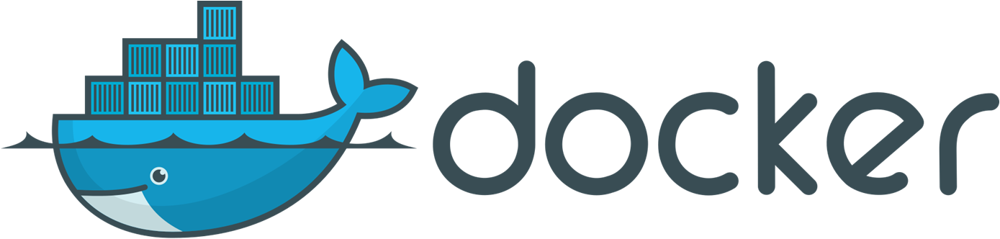
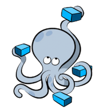

PHP
Cкриптовый язык общего назначения, интенсивно применяемый для разработки веб-приложений. В настоящее время поддерживается подавляющим большинством хостинг-провайдеров и является одним из лидеров среди языков, применяющихся для создания динамических веб-сайтов.
С помощью этого ЯП написана большая часть этого проекта.

HTML5
Cтандартизированный язык разметки документов во Всемирной паутине. Большинство веб-страниц содержат описание разметки на языке HTML. Язык HTML интерпретируется браузерами, полученный в результате интерпретации форматированный текст отображается на экране монитора компьютера или мобильного устройства.

CSS
Формальный язык описания внешнего вида документа (веб-страницы), написанного с использованием языка разметки HTML. Также может применяться к любым XML-документам, например, к SVG или XUL.

JavaScript
Язык программирования, который позволяет создать динамически обновляемый контент, управляет мультимедиа, анимирует изображения и так далее

Apache
Cвободный веб-сервер. Apache является кроссплатформенным ПО, поддерживает операционные системы Linux, BSD, Mac OS, Microsoft Windows, Novell NetWare, BeOS. Основными достоинствами Apache считаются надёжность и гибкость конфигурации. Он позволяет подключать внешние модули для предоставления данных, использовать СУБД для аутентификации пользователей, модифицировать сообщения об ошибках и т. д. Поддерживает IPv4.
Именно на этом веб-сервере запущен этот веб-сайт.
PostgreSQL
Свободная объектно-реляционная система управления базами данных (СУБД). Существует в реализациях для множества UNIX-подобных платформ, включая AIX, различные BSD-системы, HP-UX, IRIX, Linux, macOS, Solaris/OpenSolaris, Tru64, QNX, а также для Microsoft Windows.
Эта СУБД используется в этом проекте. С помощью PostgreSQL данные о пользователях и их сообщения записываются в базу данных.

Docker
Docker - это контейнеризатор приложений. Каждый контейнер строится на основе Docker-образов. Контейнеры запускаются напрямую из ядра операционной системы Linux.
Благодаря этому, они потребляют гораздо меньше ресурсов, чем при аппаратной виртуализации.
Изоляция рабочей среды осуществляется при помощи технологии namespace. Для каждого изолированного пространства (контейнера) создается уникальное пространство имен, которое и обеспечивает к нему доступ.
Любой процесс, выполняемый внутри контейнера, ограничивается namespace.
Благодаря пространству имён NET мы можем выделять для изолированных процессов собственные сeтевые интерфейсы. Даже loopback-интерфейс для каждого пространства имён будет отдельным.
С помощью же пространств имён MOUNT можно создавать полностью независимые файловые системы, ассоциируемые с различными процессами.
Docker применяется для управления отдельными контейнерами (сервисами), из которых состоит приложение.
В этом проекте используется два контейнера. Один с веб-сервером Apache, другой с СУБД PostgreSQL

Docker-Compose
Docker Compose используется для одновременного управления несколькими контейнерами, входящими в состав приложения. Этот инструмент предлагает те же возможности, что и Docker, но позволяет работать с более сложными приложениями.
